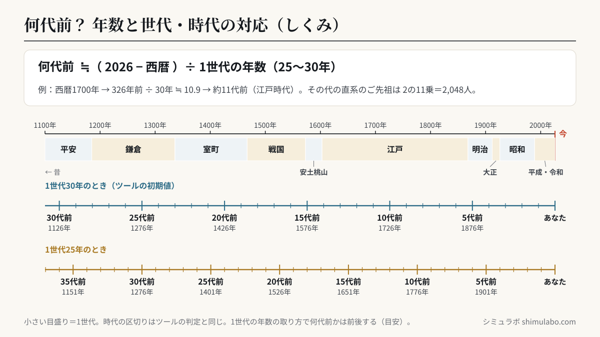
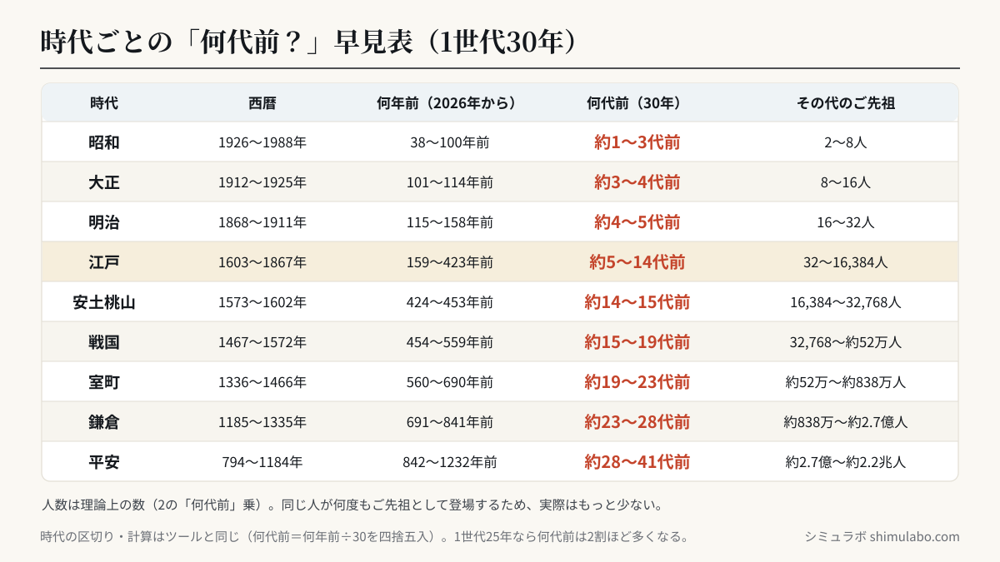

ポイント：1世代を約30年とすると、世代数 ＝ さかのぼる年数 ÷ 30 で概算できます。例えば約300年前（江戸中期）なら10代前、その代の直系ご先祖は2の10乗で1,024人になります。






図はタップすると大きく表示されます。資料やSNSに使うときは、出典「シミュラボ」とページのURLを添えてください。
年代と世代・時代の目安
| 西暦 | 約何代前 | 時代 |
|---|---|---|
| 1870年ごろ | 約5代前 | 幕末〜明治 |
| 1720年ごろ | 約10代前 | 江戸中期 |
| 1570年ごろ | 約15代前 | 戦国 |
| 1420年ごろ | 約20代前 | 室町 |
| 1270年ごろ | 約25代前 | 鎌倉 |
ご先祖の人数そのものは 先祖の人数 計算、血のつながりは 血縁度計算 でどうぞ。戸籍でたどれるのは一般に江戸末期〜明治初期（4〜5代前ごろ）までとされます。
よくある質問
- 江戸時代のご先祖は何代前？
- 江戸中期（約300年前）なら約10代前が目安です。1世代の年数の取り方で前後します。
- 戸籍は何代前までたどれる？
- 現存する戸籍では、一般に江戸末期〜明治初期生まれ（4〜5代前ごろ）までさかのぼれることが多いです。
- 1世代は何年？
- 25〜30年が目安です。本ツールでは年数を変えて調整できます。
- データは送信されますか？
- いいえ。すべてブラウザ内で完結します。
参考
- 系図・世代の一般的な数え方（1世代≈25〜30年）